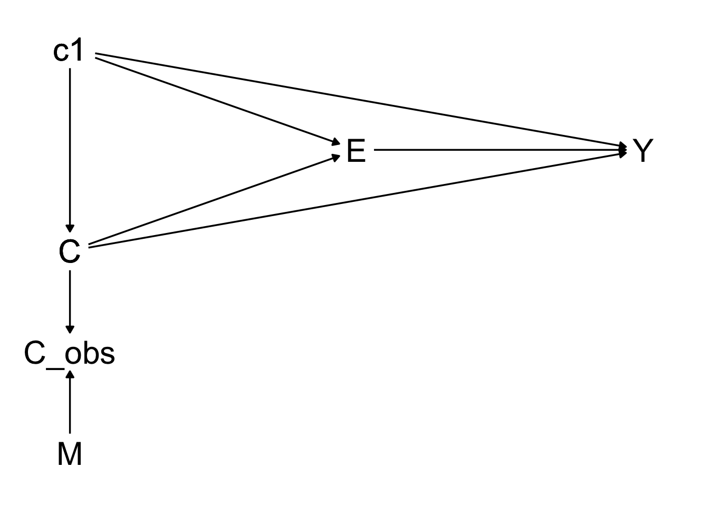
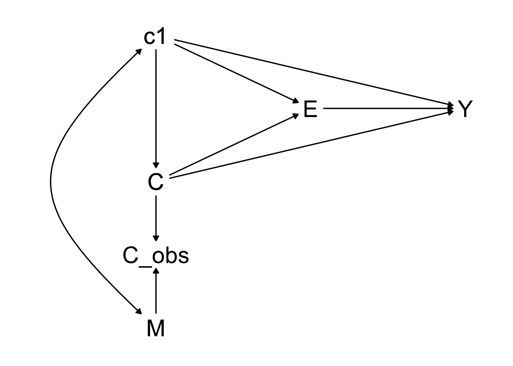
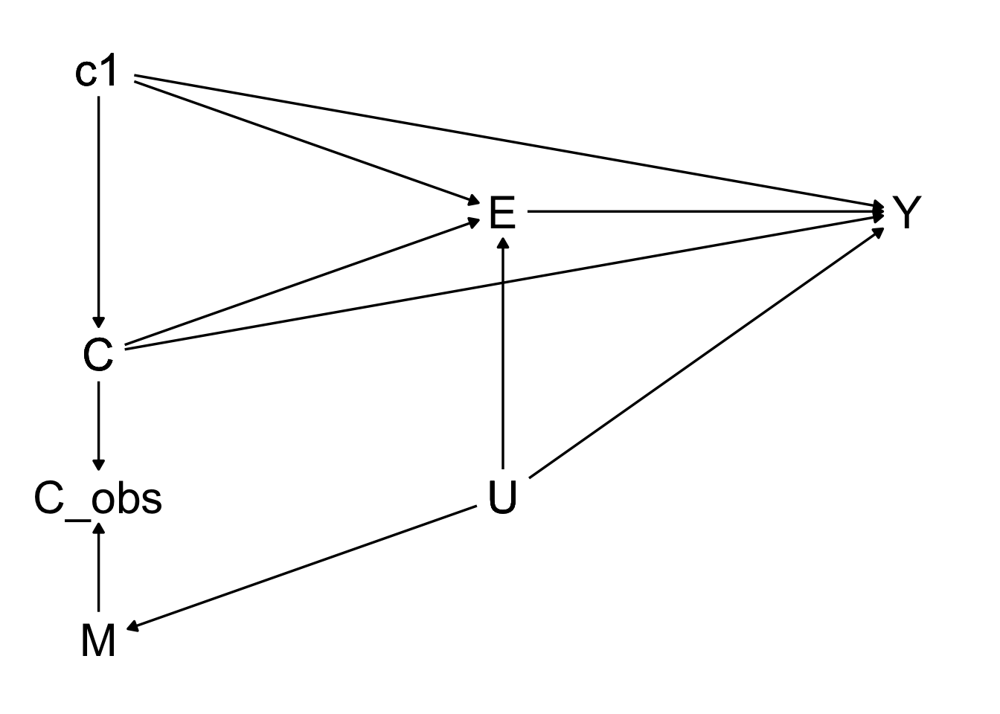
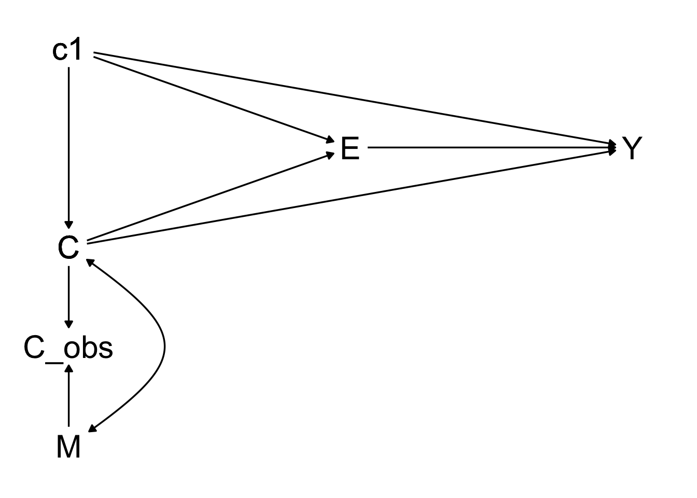
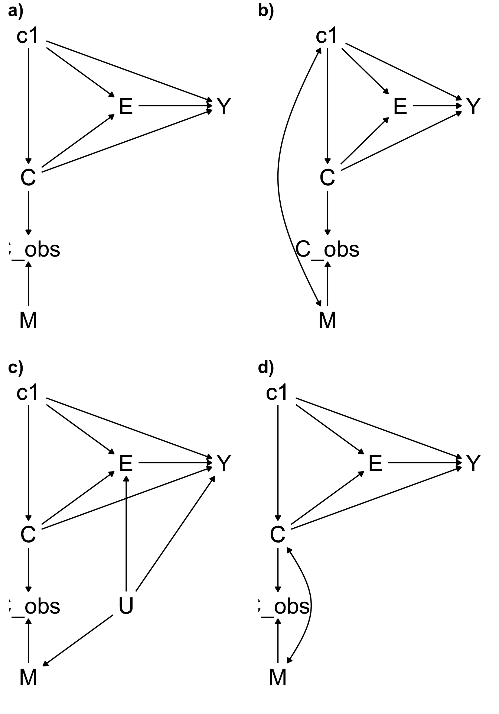
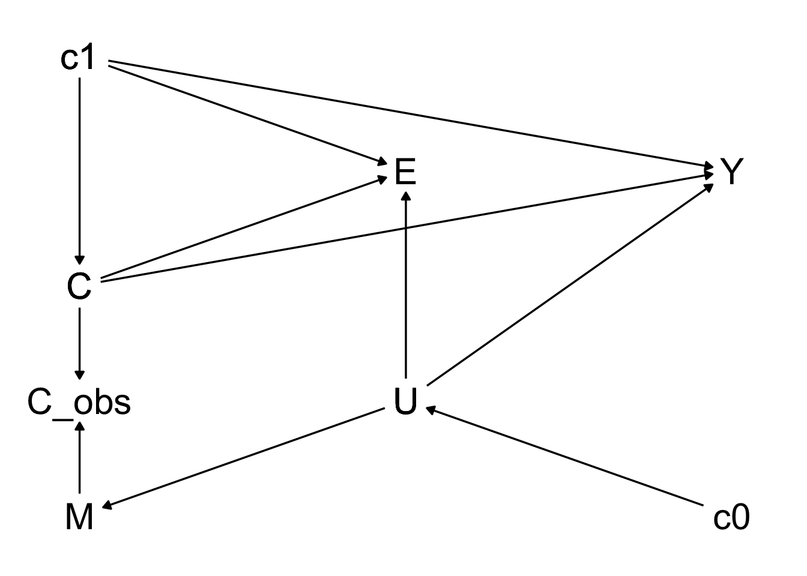

suppressMessages(library(dagitty))
suppressMessages(library(ggdag))
suppressMessages(library(ggplot2))Drawing M-graph assumptions
Glossary
| Symbol | Meaning |
|---|---|
| E | Exposure/treatment |
| Y | Outcome |
| C | Confounder of interest |
| C_obs | Observed portion of C |
| M | Missingness of C (M=0 fully observed and M=1 fully missing) |
| c1 | Covariates associated with outcome and missingness |
| c0 | Auxiliary covariates |
| U | Unmeasured covariate/confounder |
General coordinates
# coordinates for mcar, mar, mnar_vaue
coords <- list(
x = c(c1 = -1, E = 0, Y = 1, C = -1, C_obs = -1, M = -1),
y = c(c1 = 2, E = 1, Y = 1, C = 0, C_obs = -1, M = -2)
)MCAR
# using more R-like syntax to create the same DAG
mcar <- ggdag::dagify(
Y ~ E,
Y ~ c1 + C,
E ~ c1 + C,
C ~ c1,
C_obs ~ M + C,
exposure = "E",
outcome = "Y",
coords = coords) %>%
ggdag::tidy_dagitty() %>%
ggdag::ggdag_classic() +
ggdag::theme_dag()
mcar
MAR
( ggdag draws bidrectional arrows for curved edges => need to fix manually)
# using more R-like syntax to create the same DAG
mar <- ggdag::dagify(
Y ~ E,
Y ~ c1 + C,
E ~ c1 + C,
C ~ c1,
C_obs ~ M + C,
M ~~ c1,
exposure = "E",
outcome = "Y",
coords = coords) %>%
ggdag::tidy_dagitty() %>%
ggdag::ggdag_classic() +
ggdag::theme_dag()
mar
# coordinates for mnar_u
coords_u <- list(
x = c(c1 = -1, E = 0, Y = 1, C = -1, C_obs = -1, M = -1, U = 0),
y = c(c1 = 2, E = 1, Y = 1, C = 0, C_obs = -1, M = -2, U = -1)
)
# using more R-like syntax to create the same DAG
mnar_u <- ggdag::dagify(
Y ~ E,
Y ~ c1 + C + U,
E ~ c1 + C + U,
C ~ c1,
C_obs ~ M + C,
M ~ U,
exposure = "E",
outcome = "Y",
coords = coords_u) %>%
ggdag::tidy_dagitty() %>%
ggdag::ggdag_classic() +
ggdag::theme_dag()
mnar_u
MNAR (value)
Missingness depends on the value of the confounder itself ( ggdag draws bidrectional arrows for curved edges => need to fix manually)
# using more R-like syntax to create the same DAG
mnar_value <- ggdag::dagify(
Y ~ E,
Y ~ c1 + C,
E ~ c1 + C,
C ~ c1,
C_obs ~ M + C,
M ~~ C,
exposure = "E",
outcome = "Y",
coords = coords) %>%
ggdag::tidy_dagitty() %>%
ggdag::ggdag_classic() +
ggdag::theme_dag()
mnar_value
MNAR (unmeasured)
Missingness depends on unobserved factor.
Combined
Combine all plots in a panel
dag <- ggpubr::ggarrange(
mcar,
mar,
mnar_u,
mnar_value,
labels = c("a)",
"b)",
"c)",
"d)"),
font.label =
list(
size = 18,
color = "black",
face = "bold",
family = NULL),
vjust = 1.25
)
png(here::here("images", "dag_raw.png"), width = 12, height = 10, units = "in", res=300)
dag
invisible(dev.off())dag
Appendix
Scenario with c0
# coordinates for mcar, mar, mnar_vaue
coords_c0 <- list(
x = c(c0 = -2, c1 = -1, E = 0, Y = 1, C = -1, C_obs = -1, M = -1, U = -2),
y = c(c0 = 1, c1 = 2, E = 1, Y = 1, C = 0, C_obs = -1, M = -2, U = -1)
)# using more R-like syntax to create the same DAG
# coordinates for mnar_u
coords_u <- list(
x = c(c1 = -1, E = 0, Y = 1, C = -1, C_obs = -1, M = -1, U = 0, c0 = 1),
y = c(c1 = 2, E = 1, Y = 1, C = 0, C_obs = -1, M = -2, U = -1, c0 = -2)
)
# using more R-like syntax to create the same DAG
mnar_u_c0 <- ggdag::dagify(
Y ~ c1 + C + U,
E ~ c1 + C + U,
C ~ c1,
C_obs ~ M + C,
M ~ U,
U ~ c0,
exposure = "E",
outcome = "Y",
coords = coords_u) %>%
ggdag::tidy_dagitty() %>%
ggdag::ggdag_classic() +
ggdag::theme_dag()
mnar_u_c0